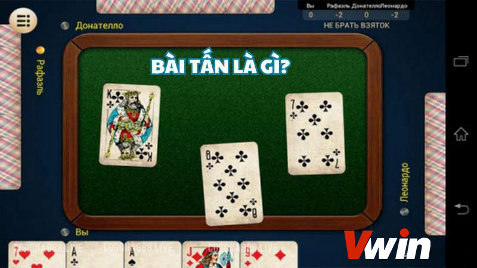
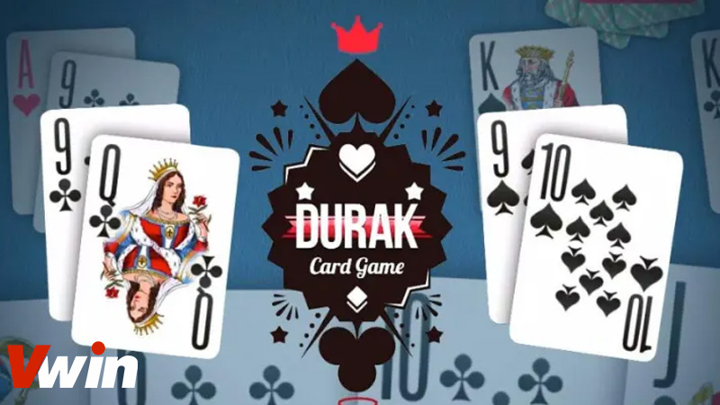

.png)
ĐÃ ĐĂNG TRÊN TRÊN THÁNG BA 1, 2024 BỞI Vwin
Bài tấn là gì? Đây có phải là một trong những trò chơi bài phổ biến và thu hút sự quan tâm của nhiều người. Đối với những ai muốn hiểu rõ hơn về cách chơi bài tấn và các chiến thuật trong trò chơi này, đòi hỏi người chơi phải am hiểu luật lẻ và chiến thuật tinh tế. Game bài Vwin đã tổng hợp và cung cấp chi tiết về luật chơi và các thủ thuật cần biết để trở thành một cao thủ bài tấn. Hãy cùng nhau khám phá nhé!
Bài Tấn, hay còn được biết đến với tên gọi Durak là một trò chơi bài phổ biến từ Nga, lan rộng ra nhiều quốc gia khác trên thế giới, trong đó có Việt Nam.
Dù cách chơi không quá phức tạp, nhưng bài Tấn vẫn mang trong mình những đặc điểm riêng biệt và luật chơi độc đáo so với các trò chơi bài khác. Điều này làm nên sự hấp dẫn và dễ nhận biết của trò chơi này.
Bài Tấn không chỉ dựa vào may mắn mà còn yêu cầu người chơi phải có tư duy và chiến thuật thông minh, tạo nên một trải nghiệm đặc biệt và hấp dẫn.
Cũng như các trò phổ biến khác như phỏm, tá lả hay tiến lên, bài Tấn cũng sử dụng bộ bài tú lơ khơ 52 lá bài. Độ mạnh của mỗi quân bài được xác định từ 2 đến át. Trong đó, quân át được coi là quân lớn nhất và quân 2 là quân bé nhất.
Khám phá luật chơi bài Tấn
Tùy thuộc vào vùng miền hoặc sở thích cá nhân, các quân bài có thể được gọi theo cách khác nhau. Ví dụ, quân K có thể được gọi là ca hoặc già, quân Q có thể được gọi là đầm hoặc quy, và quân J có thể được gọi là gi hoặc bồi.
Khi bắt đầu ván chơi, người chia bài sẽ xào đều bộ bài và bắt đầu chia cho mỗi người một lá bài theo chiều kim đồng hồ cho đến khi hết bộ bài. Lá bài đầu tiên được chia sẽ quyết định chất bài chủ của ván đấu.
Trò chơi tiếp diễn với mỗi người chơi tấn lượt theo chiều kim đồng hồ, người tấn có thể chọn bất kỳ lá bài nào. Người bị tấn sẽ cố gắng đánh ra những quân bài cùng chất nhưng lớn hơn để đỡ. Trường hợp người bị tấn không có quân bài cùng chất và lớn hơn, họ có thể đánh ra quân bài trưởng. Nếu quân tấn là quân trưởng, người bị tấn phải đánh ra quân bài lớn hơn cùng chất trưởng để đỡ.
Hướng dẫn chi tiết cách chơi bài Tấn
Sau khi tìm hiểu xong luật chơi bài Tấn là gì, người chơi có thể tiến hành chơi. Dưới đây là hướng dẫn chi tiết cách chơi bài Tấn.
1. Xác định người chơi bắt đầu: Người ngồi bên trái người chia bài sẽ là người bắt đầu ván chơi.
2. Đánh bài:
3. Phản ứng của người chơi tiếp theo:
1. Xác định người chơi bắt đầu: Người ngồi bên trái người chia bài sẽ là người bắt đầu ván chơi.
4. Kết thúc lượt chơi:
Nếu tất cả người chơi đều chọn bỏ bài, người chơi đánh đầu tiên sẽ “ôm bài” và có quyền đánh đầu tiên trong vòng tiếp theo.
5. Tiếp tục vòng chơi:
Quá trình trên sẽ tiếp tục cho đến khi có một người chơi hết bài và được xem là người chiến thắng của ván chơi.
Những điều cần lưu ý trong quá trình chơi bài Tấn là gì
Tôn trọng lượt chơi: Khi đã đến lượt ra bài, nếu có lời nói hoặc hành động khiến cho người chơi khác hiểu là cho qua lượt, thì không được hồi lại.
Chấp nhận quyết định: Khi đến lượt ra bài, nếu có lời nói về lá bài sắp đánh ra, người chơi phải giữ nguyên lá bài đó và không thay đổi. Nếu không thể giữ nguyên, người chơi có thể bị xử thua hoặc phạt bốc thêm một lá, tuân theo quy ước trước đó.
Quyền yêu cầu hạ lại bài: Nếu người chơi đi trước chưa quyết định hạ bài mà người đi sau vội hạ bài của mình, người đi trước có quyền yêu cầu người đi sau cầm bài lên lại để tránh bị lộ bài.
Bảo mật thông tin bài: Người chơi có quyền giữ thông tin về số lượng lá bài còn trong tay bí mật. Người chơi khác chỉ được đánh số lượng lá bài tối đa bằng số lá bài mà người chơi đó cầm trên tay trong 1 vòng đấu.
Cấm lục rác: Luật cấm lục rác, người chơi không được phép đếm hoặc kiểm tra lại các lá bài đã hạ xuống. Trong trường hợp phát hiện lục rác, người chơi có thể bị xử thua hoặc phạt bốc thêm lá bài, tuân theo quy ước đã được thống nhất trước đó.
Tóm lại, bài viết đã cung cấp một số thông tin hữu ích về bài tấn là gì và cách chơi chi tiết dành cho những người muốn khám phá thế giới thú vị của trò chơi này. Hãy xem bài tấn như một lựa chọn giải trí hấp dẫn, giúp ta thư giãn và xua tan đi những căng thẳng, mệt mỏi trong cuộc sống hàng ngày. Tuy nhiên, cần nhớ không nên lạm dụng để tránh các rủi ro không mong muốn.
Vwin được công nhận là nhà cái cá cược hợp pháp - an toàn. Vwin còn có trụ sở chính và cá cược trực tiếp tại Phú Quốc.